Bay Area Dynasties
Five Super Bowls, four NBA titles, three World Series, and the smartest small-market run baseball has ever seen. The Bay Area does not just make good teams, it makes eras. Here are the runs that defined them.
The 49ers Dynasty
Bill Walsh's West Coast offense turned San Francisco into the team of the 1980s. Five Lombardi Trophies, Montana to Rice, and a standard the rest of the NFL spent a decade chasing.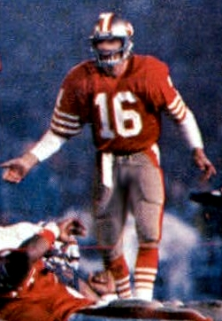
1982The Catch, and the Dynasty It Started
Montana to Dwight Clark at Candlestick. The moment the run truly began.
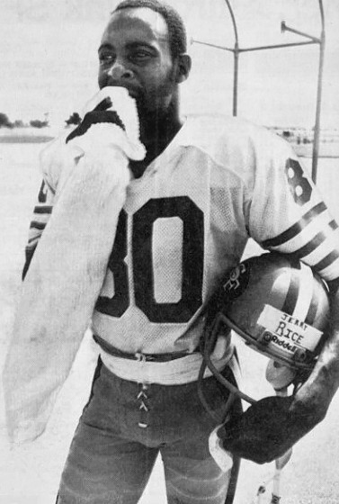
1980sTeam of the Decade: When the 49ers Ran the NFL
Five titles with Montana, Rice, and Young. The gold standard of a generation.
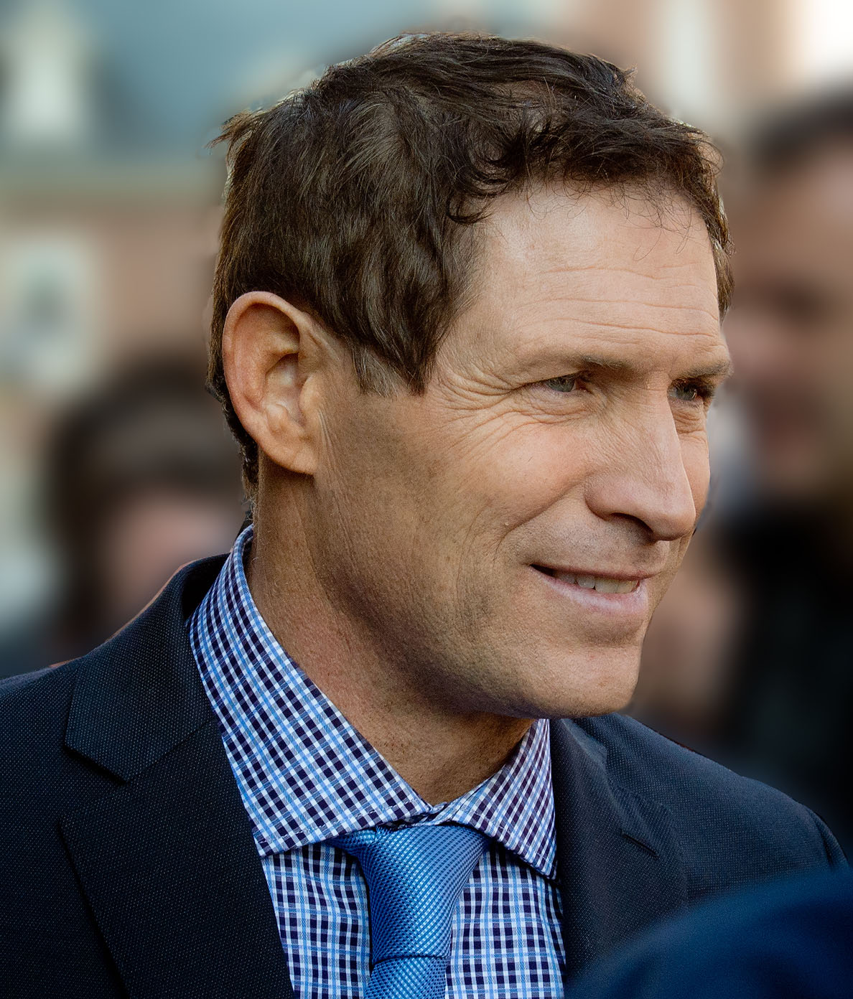
1994Steve Young Closes the Book
Six touchdowns in Super Bowl XXIX, finally out from Montana's shadow. The dynasty's last great chapter.
The Warriors Dynasty
Curry and the Splash Brothers reinvented how basketball is played, won four titles in eight years, and posted the greatest regular season in NBA history along the way.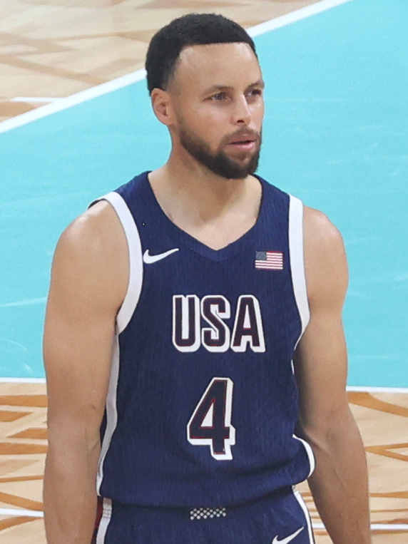
201673-9: Best Record Ever, Then They Added Durant
The greatest regular season ever, followed by the most debated signing of the decade.
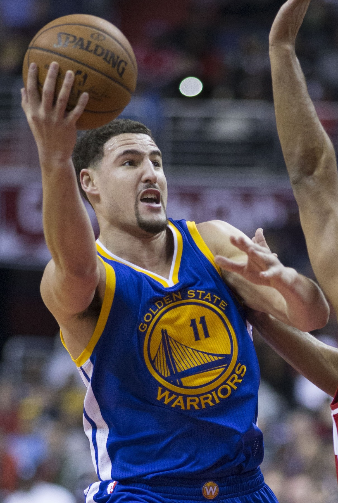
2015The Night Klay Scored 37 in a Quarter
Thirteen shots, thirteen makes, one quarter. The most absurd shooting the league has seen.
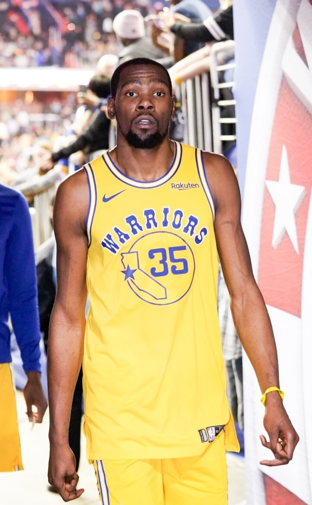
2017–18From Rick Barry to the Splash Brothers
The full arc of Warriors greatness, from 1975 to back-to-back rings with Durant.
The Even-Year Giants
Three World Series titles in five years, all in even years. Built on elite pitching, Bochy's bullpen management, Posey behind the plate, and the greatest October arm of the era.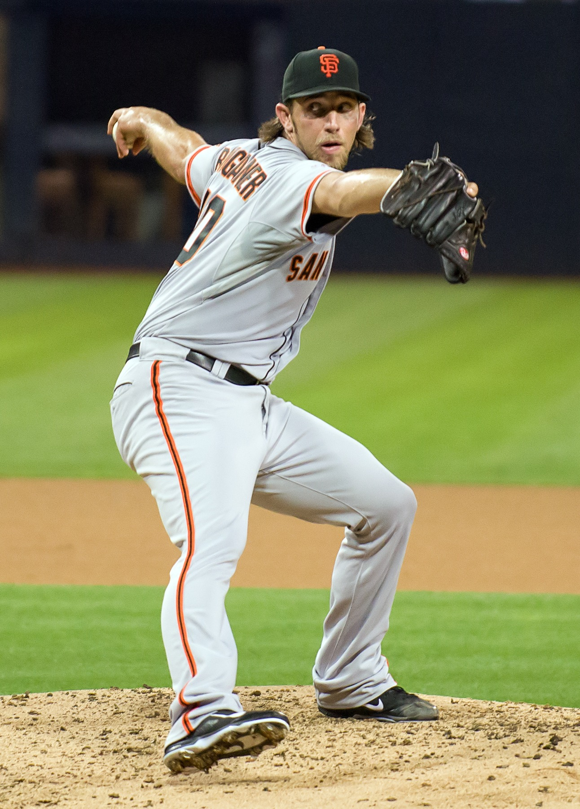
2014Bumgarner Owned the 2014 World Series
Five scoreless to close Game 7 on two days' rest. The best World Series pitching in a generation.
 2010–14
2010–14Even-Year Magic: The Giants Dynasty
2010, 2012, 2014. Three parades built on pitching, timing, and nerve.
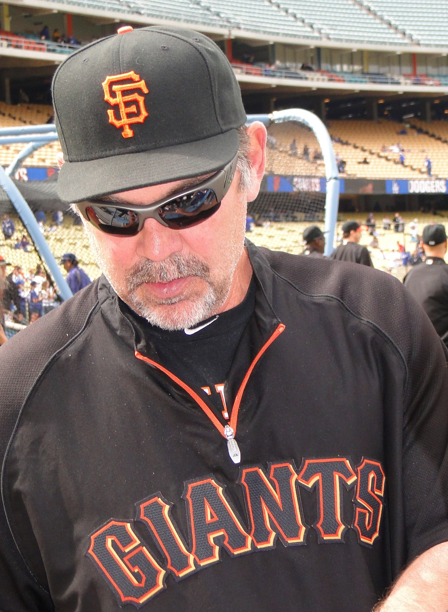
2010sBochy's Wizardry and the Core Four Bullpen
How a Hall of Fame manager turned close games into championships.
A's Moneyball
No titles, but a revolution. Billy Beane built a perennial contender on one of baseball's smallest payrolls, won 20 straight in 2002, and changed how every front office in the sport thinks.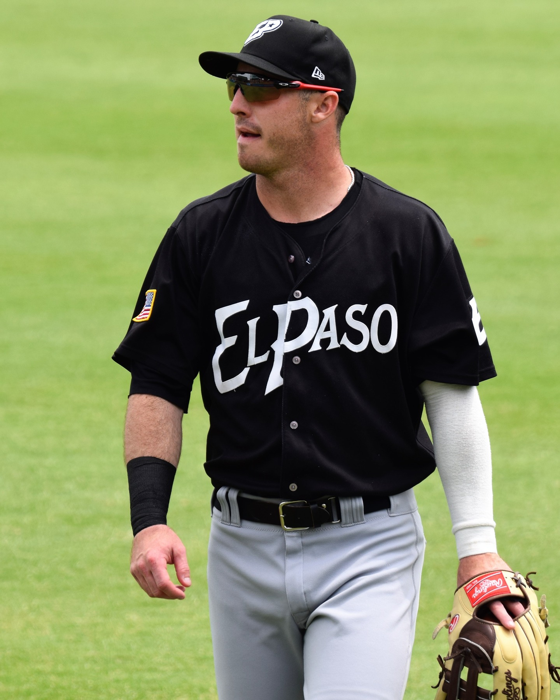
2002The Streak: 20 Wins in a Row
The longest winning streak in American League history, on a bottom-tier budget.
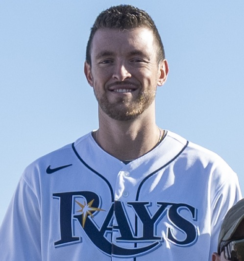
2000sThe Big Three
Hudson, Mulder, and Zito anchored a rotation that made the Coliseum dangerous every October.
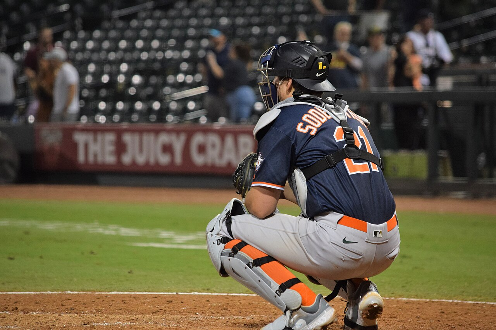
2024From Moneyball to Sacramento
How the franchise went from revolutionary to relocated in two decades.